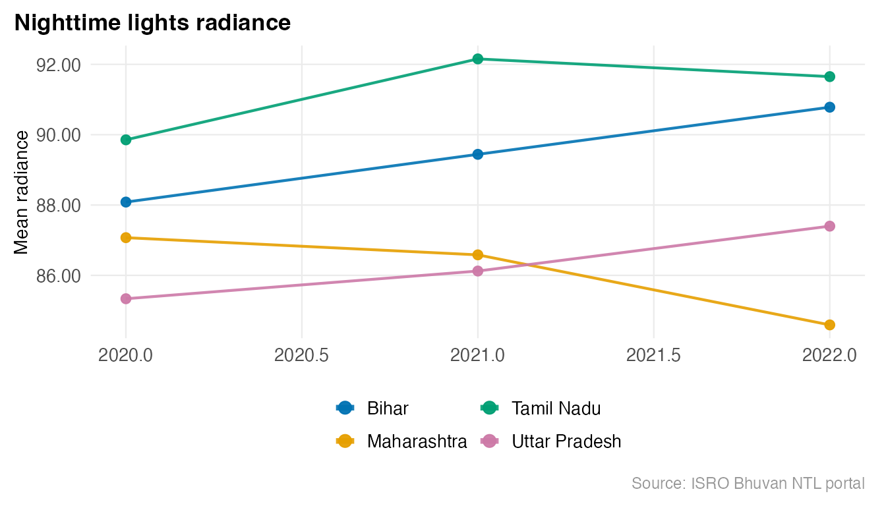
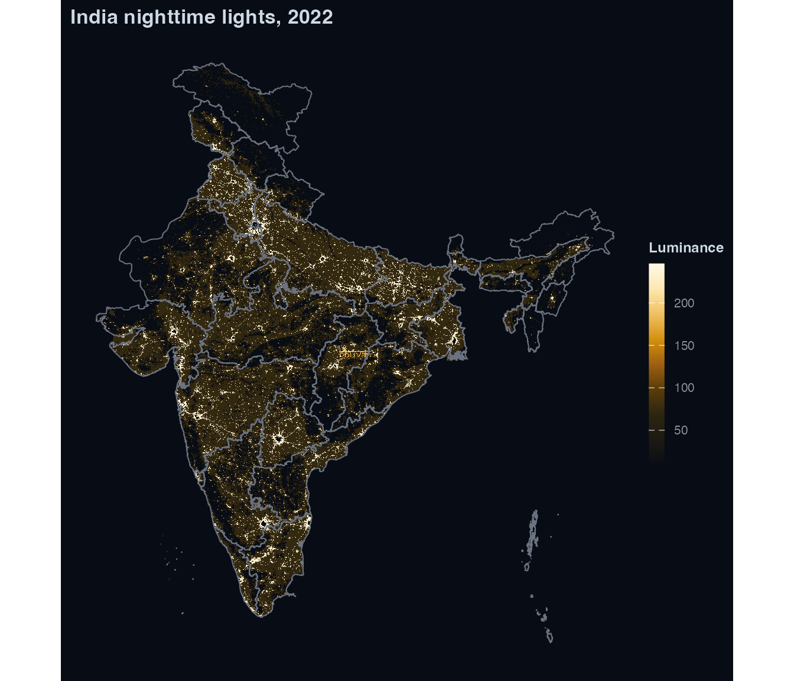
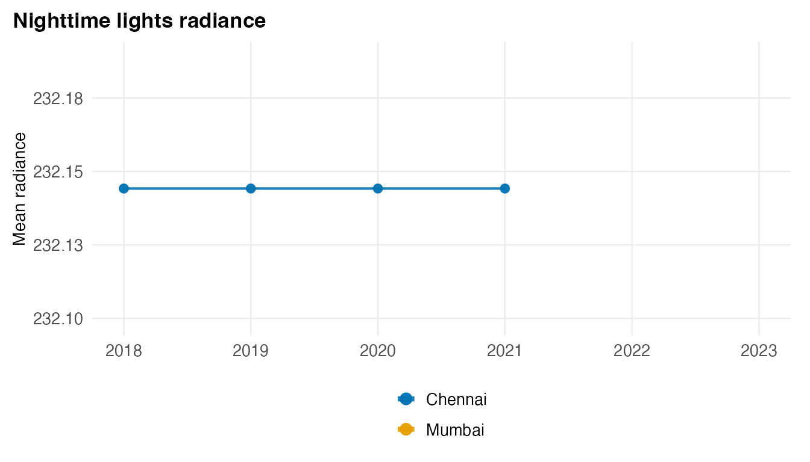
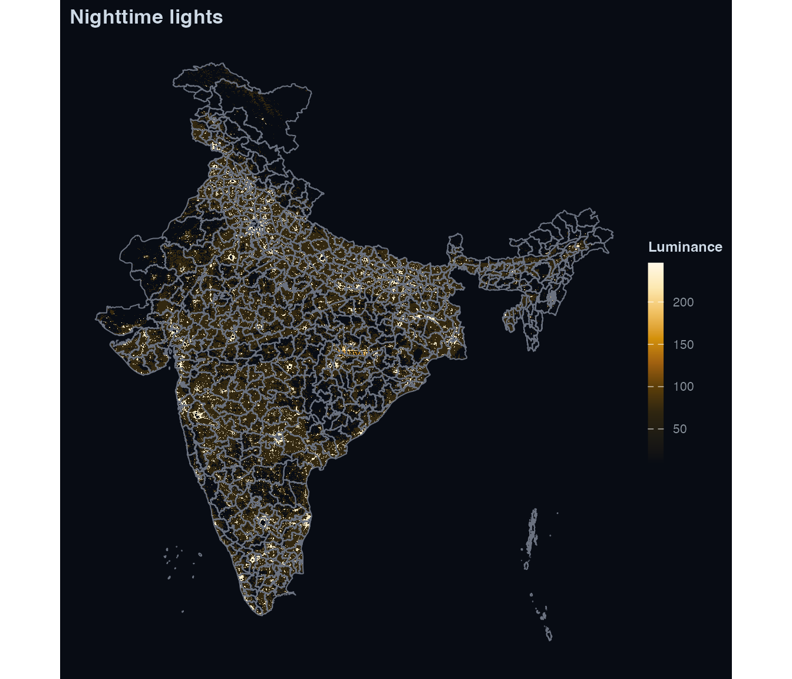

Custom geometry: district-level NTL with custom boundaries
Source:vignettes/custom-geometry.Rmd
custom-geometry.Rmdlightson accepts any sf polygon layer. The
workflow below starts with the bundled LGD state boundaries, then swaps
in district-level GeoJSONs from bharatviz.
State-level workflow (bundled boundaries)
library(lightson)
library(sf)
#> Linking to GEOS 3.13.0, GDAL 3.8.5, PROJ 9.5.1; sf_use_s2() is TRUE
states <- get_india_admin("state")
nrow(states)
#> [1] 36
head(states[, c("state_name", "state_code")])
#> Simple feature collection with 6 features and 2 fields
#> Geometry type: GEOMETRY
#> Dimension: XY
#> Bounding box: xmin: 76.7052 ymin: 6.7528 xmax: 97.4129 ymax: 30.7941
#> Geodetic CRS: WGS 84
#> # A tibble: 6 × 3
#> state_name state_code geometry
#> <chr> <chr> <GEOMETRY [°]>
#> 1 A & N Islands 35 GEOMETRYCOLLECTION (POLYGON ((92.4043 10.7844, 9…
#> 2 Andhra Pradesh 37 MULTIPOLYGON (((80.7879 15.7605, 80.79048 15.764…
#> 3 Arunachal Pradesh 12 POLYGON ((96.1765 29.3452, 96.1799 29.3075, 96.2…
#> 4 Assam 18 MULTIPOLYGON (((91.5352 25.8839, 91.5304 25.8713…
#> 5 Bihar 10 POLYGON ((84.1093 27.5208, 84.1242 27.5108, 84.1…
#> 6 Chandigarh 04 POLYGON ((76.7723 30.7941, 76.7828 30.7892, 76.7…Download Bhuvan WMS rasters for a subset of years.
bhuvan_raster() derives the bounding box from the
geometry:
rasters <- bhuvan_raster(states, years = 2020:2022)
#> Using cached: bhuvan_349e9f004c78_2020.tif
#> Using cached: bhuvan_349e9f004c78_2021.tif
#> Using cached: bhuvan_349e9f004c78_2022.tif
names(rasters)
#> [1] "2020" "2021" "2022"
rasters[["2022"]]
#> class : SpatRaster
#> size : 1024, 1024, 1 (nrow, ncol, nlyr)
#> resolution : 0.0285501, 0.02962432 (x, y)
#> extent : 68.1776, 97.4129, 6.7528, 37.0881 (xmin, xmax, ymin, ymax)
#> coord. ref. : lon/lat WGS 84 (EPSG:4326)
#> source : bhuvan_349e9f004c78_2022.tif
#> name : file443945280941_1
#> min value : 10.0000
#> max value : 245.9732Bhuvan WMS returns RGB visualisation tiles, not physical radiance.
bhuvan_raster() converts to single-band luminance via
lum = 0.2126*R + 0.7152*G + 0.0722*B (ITU-R BT.709). Values
are comparable across years for trend analysis but are not in
nW/cm^2/sr.
panel <- extract_panel(rasters, states, id_col = "state_name")
#> Warning in st_cast.GEOMETRYCOLLECTION(X[[i]], ...): only first part of
#> geometrycollection is retained
head(panel)
#> region_id year mean_radiance n_pixels
#> 1 A & N Islands 2020 72.73280 1
#> 37 A & N Islands 2021 NaN 0
#> 73 A & N Islands 2022 72.73280 1
#> 2 Andhra Pradesh 2020 89.00605 5425
#> 38 Andhra Pradesh 2021 89.06904 5619
#> 74 Andhra Pradesh 2022 85.62903 9063
library(ggplot2)
sel <- c("Bihar", "Maharashtra", "Tamil Nadu", "Uttar Pradesh")
plot_ntl_trend(
panel[panel$region_id %in% sel, ],
region = sel,
caption = "Source: ISRO Bhuvan NTL portal"
)
plot_ntl_map(
rasters[["2022"]],
polygons = states,
title = "India nighttime lights, 2022"
)
#> Warning: Raster pixels are placed at uneven horizontal intervals and will be shifted
#> ℹ Consider using `geom_tile()` instead.
#> Raster pixels are placed at uneven horizontal intervals and will be shifted
#> ℹ Consider using `geom_tile()` instead.
District-level workflow
BHARATVIZ <- "https://bharatviz.org"
districts <- tryCatch(
sf::read_sf(file.path(BHARATVIZ, "India-bhuvan-districts.geojson")),
error = function(e) NULL
)
if (is.null(districts)) {
message("bharatviz not reachable -- skipping district examples")
knitr::opts_chunk$set(eval = FALSE)
}
nrow(districts)
#> [1] 663
rasters_dist <- bhuvan_raster(districts, years = 2018:2023)
#> Using cached: bhuvan_3a578bdafd65_2018.tif
#> Using cached: bhuvan_3a578bdafd65_2019.tif
#> Using cached: bhuvan_3a578bdafd65_2020.tif
#> Using cached: bhuvan_3a578bdafd65_2021.tif
#> Using cached: bhuvan_3a578bdafd65_2022.tif
#> Using cached: bhuvan_3a578bdafd65_2023.tif
names(rasters_dist)
#> [1] "2018" "2019" "2020" "2021" "2022" "2023"
panel_dist <- extract_panel(rasters_dist, districts, id_col = "district_name")
head(panel_dist)
#> region_id year mean_radiance n_pixels
#> 1 Adilabad 2018 80.62973 687
#> 656 Adilabad 2019 81.94291 589
#> 1311 Adilabad 2020 84.66755 468
#> 1966 Adilabad 2021 84.92001 537
#> 2621 Adilabad 2022 81.22808 957
#> 3276 Adilabad 2023 79.89459 1291
plot_ntl_trend(panel_dist, region = c("Mumbai", "Delhi", "Chennai", "Bengaluru"))
#> Warning: Removed 8 rows containing missing values or values outside the scale range
#> (`geom_line()`).
#> Warning: Removed 8 rows containing missing values or values outside the scale range
#> (`geom_point()`).
plot_ntl_map(rasters_dist[["2022"]], polygons = districts)
#> Warning: Raster pixels are placed at uneven horizontal intervals and will be shifted
#> ℹ Consider using `geom_tile()` instead.
#> Raster pixels are placed at uneven horizontal intervals and will be shifted
#> ℹ Consider using `geom_tile()` instead.
LGD boundaries
lgd <- sf::read_sf(file.path(BHARATVIZ, "India_LGD_districts.geojson"))
panel_lgd <- extract_panel(rasters_dist, lgd, id_col = "district_name")
head(panel_lgd)
#> region_id year mean_radiance n_pixels
#> 1 24 Paraganas North 2018 101.40637 384
#> 780 24 Paraganas North 2019 97.81399 369
#> 1559 24 Paraganas North 2020 96.70937 346
#> 2338 24 Paraganas North 2021 98.10729 371
#> 3117 24 Paraganas North 2022 100.81564 386
#> 3896 24 Paraganas North 2023 102.41911 392Historical census boundaries
dist_2011 <- sf::read_sf(file.path(BHARATVIZ, "India-2011-districts.geojson"))
panel_2011 <- extract_panel(rasters_dist, dist_2011)
head(panel_2011)
#> region_id year mean_radiance n_pixels
#> 1 Adilabad 2018 80.75823 676
#> 632 Adilabad 2019 82.08582 580
#> 1263 Adilabad 2020 84.90157 459
#> 1894 Adilabad 2021 84.89411 525
#> 2525 Adilabad 2022 81.16727 945
#> 3156 Adilabad 2023 79.83159 1280extract_panel() picks the first character column as
region_id automatically, or pass id_col
explicitly.
VIIRS path
To use NASA VIIRS rasters, supply an Earthdata token:
token <- earthdata_token()
rasters_viirs <- ntl_download("viirs", region = districts, years = 2018:2023, token = token)
#> Using cached: viirs_3a578bdafd65_2018.tif
#> Using cached: viirs_3a578bdafd65_2019.tif
#> Using cached: viirs_3a578bdafd65_2020.tif
#> Using cached: viirs_3a578bdafd65_2021.tif
#> Using cached: viirs_3a578bdafd65_2022.tif
#> Using cached: viirs_3a578bdafd65_2023.tif
if (length(rasters_viirs) > 0) {
panel_viirs <- extract_panel(rasters_viirs, districts, id_col = "district_name")
head(panel_viirs)
}
#> region_id year mean_radiance n_pixels
#> 1 Adilabad 2018 0.3298444 79913
#> 657 Adilabad 2019 0.3439170 79913
#> 1313 Adilabad 2020 0.3345843 79913
#> 1969 Adilabad 2021 0.4481786 79913
#> 2625 Adilabad 2022 0.6896970 79913
#> 3281 Adilabad 2023 0.8585687 79913